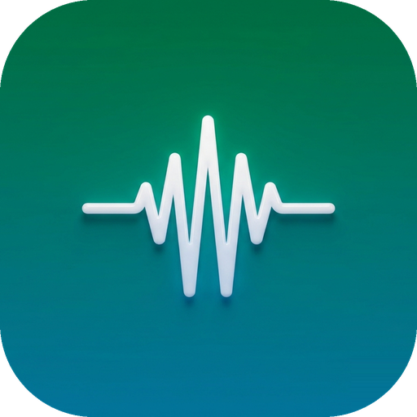
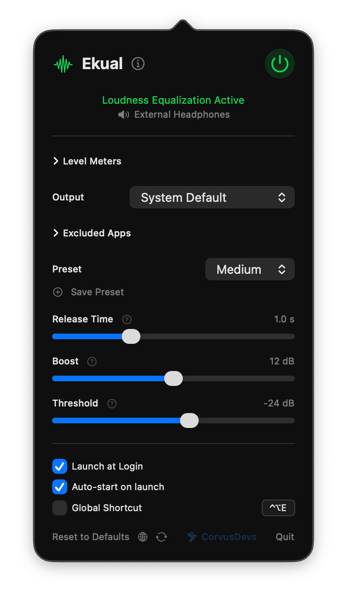
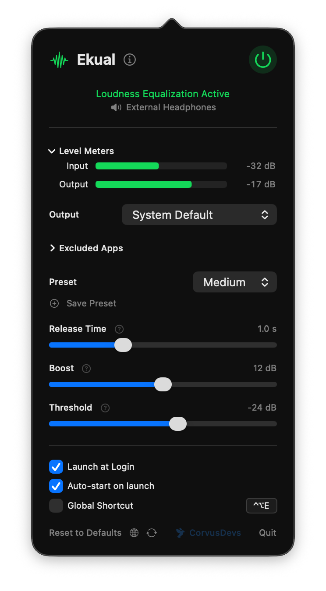

Автоматическое выравнивание громкости для macOS. Тихие звуки громче, громкие тише, в реальном времени.
14 дней бесплатного пробного периода · затем разовая покупка

Чистый минималистичный интерфейс

Индикаторы уровня в реальном времени
Функции
Ekual тихо работает в строке меню и берёт на себя всю сложность.
Мгновенно выравнивает громкость всех приложений. Фильмы, музыка, звонки, игры, всё сбалансировано автоматически.
Разработан для эффективности. Работает при менее 1% CPU, чтобы вы никогда не замечали его присутствия.
Лёгкий, Средний, Сильный, или создайте свой. Настройте время отпускания, усиление и целевой уровень.
Исключите конкретные приложения из обработки. Оставьте музыкальный плеер нетронутым, выравнивая всё остальное.
Включайте и выключайте выравнивание настраиваемым сочетанием клавиш из любого места.
Вся обработка аудио происходит локально на вашем Mac. Никакие данные не покидают ваше устройство. Никогда.
Переключайтесь между устройствами вывода на лету. Ekual плавно следует за вашим аудио.
Полная поддержка AirPods, Bluetooth-наушников и беспроводных колонок. Работает с каждым аудиоустройством, которое распознаёт macOS.
Автоматически запускается при входе в систему и тихо работает в строке меню. Настройте один раз, больше не думайте об этом.
Настройка
Ekual живёт в вашей строке меню. Предоставьте разрешение на аудио один раз, и всё готово.
Выберите Лёгкое, Среднее или Сильное выравнивание, или настройте параметры ползунками.
Ekual запускается с вашим Mac и тихо работает в фоне. Стабильная громкость, ноль усилий.
Почему Ekual
Каждое приложение, сайт и медиафайл мастерится на разном уровне громкости. Ваш Mac не исправляет это, но Ekual исправляет.
Вы смотрите тихую диалоговую сцену, а затем реклама бьёт на полную громкость. Вы переключаетесь с подкаста на видео YouTube и лихорадочно ищете клавиши громкости. Разные приложения, сайты, стриминговые сервисы, все выводят аудио на совершенно разных уровнях. Без выравнивания вы постоянно регулируете громкость вручную.
Ekual применяет сжатие динамического диапазона в реальном времени к системному аудио вашего Mac. Он отслеживает громкость аудиопотока, усиливает тихие звуки и приглушает громкие до стабильного целевого уровня. Результат: всё воспроизводится на комфортной, равномерной громкости.
Windows включает опцию "Выравнивание громкости" в настройках аудио уже более десяти лет. macOS никогда не предлагала эту функцию. Ekual заполняет этот пробел, давая пользователям Mac ту же стабильность громкости, которой пользователи Windows наслаждаются годами, с более чистой реализацией и большим контролем.
Отзывы
Thank you very much again and of course thank you for the great app. It's small but solves so many issues!
Требуется macOS 14.2 или новее.
Перестаньте тянуться к клавишам громкости.
14 дней бесплатного пробного периода · затем разовая покупка